Dan treći: Roboti, raskrsnica, ritam i ramen
Kakav dan. Svašta smo doživeli, svašta videli i pali na nos od umora.
U tri jutros smo još bili budni jer smo ustali prethodni dan u 16h. Stigli smo sa noćnog foto sešna iz hrama Senso ji. Luka je seo da obrađuje slike, a Petar da igra igrice. Do pet. Mene razbudili, nisam uopšte spavala.
U osam ujutru smo izašli iz stana. I tempo. Prvo smuti iz 7 Elevena. Ovo je onaj dan za koji smo pokupovali karte za dve atrakcije.
Ujutru otišli do Tsukuja riblje pijace. Prvo sam mislila: šta ćemo tamo, ionako nećemo kupovati ribu. Međutim, jeste interesantno da se ode i vidi. Pijaca od uskih uličica, gomila sveže ribe i morskih plodova.
I oni suzdržani Japanci se deru i nude kao prodavačica seknd henda sa Najlona, Dana. To treba videti.
Mi smo kupili gnjecave kolačiće, moćije, sa jagodom (što uradi svaki influenser koji drži do sebe). I opet se divili ukusu jagoda.
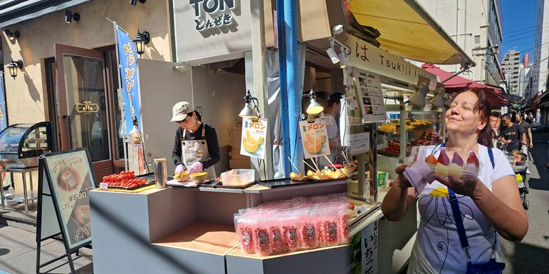 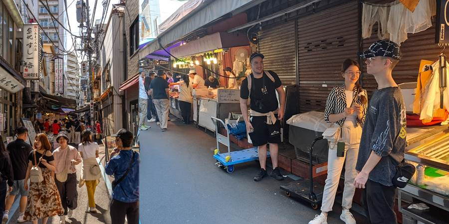 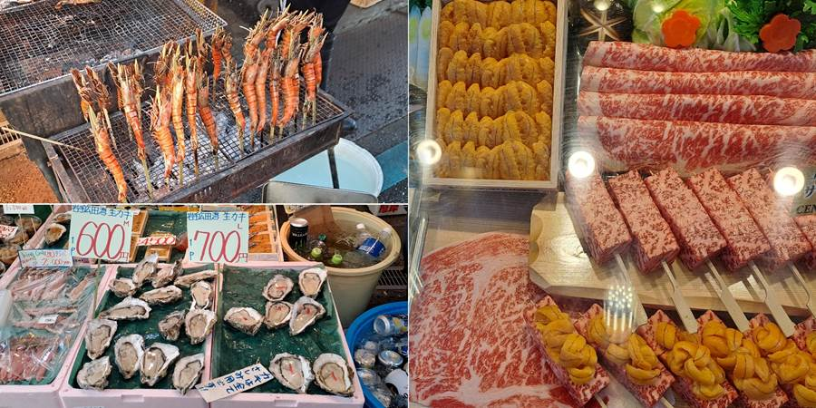Posle toga trči tamo-vamo, vozaj se taksijem, traži Kip slobode. Vidim taksista ne zna šta je Kip slobode. Ajd onda kod ogromnog robota Gandama.
Sumnjiv mi taksista. Stao nigde i kaže tamo vam je, a Gandama ni na vidiku. A taksista stao ispred Kawasaki Robotics. Reko, ok, i ovo smo hteli da vidimo, ali radi tek od 10.
Ajd onda ipak da nađemo robota, krenuli na dobru stranu, vratili nas na pogrešnu oko zgrade.
Aj curi nam vreme za Team Labs Planet, multimedijalni muzej. Aj trk tamo.
Ono što na mapi izgleda blizu, u Tokiju nikad nije.
Ustvari sam sve mirno isplanirala, al mi Luka gurnuo papriku da ne kažem gde, da on još hoće u šoping po Akihabari, baš danas, pa sam htela da aktivnosti posle muzeja naguram pre, ne bih li mu ugodila, a da i on ima vremena da odmori.
Sudar planova i haos.
Uglavnom, iako nam je karta rezervisana na termin, stigli smo na vreme. A tamo, čudo. To ne može da se prepriča.
Igra svetlosti, išli bosi po koječemu, pa i po vodi u kojoj su plivale virtuelne šarene ribe i bežale od nas.
Ima deo i sa prelepim cvećem, orhidejama i ogledalima, pa izgleda da ima još više cveća. Šareno sve, šljašti, menja boje.
Islikali smo se.
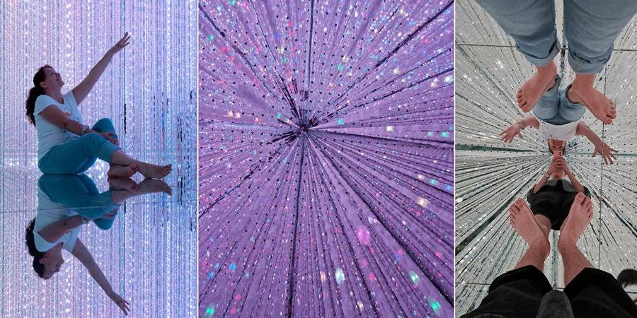 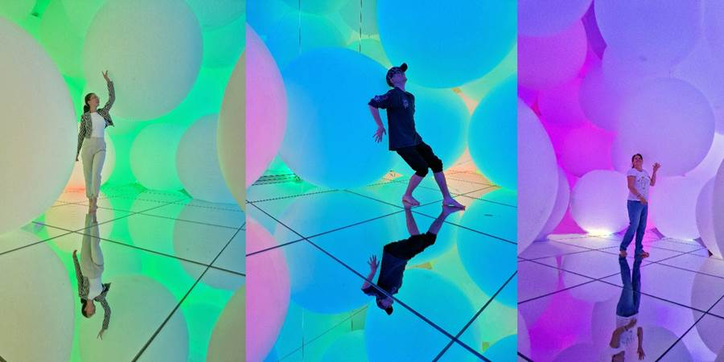 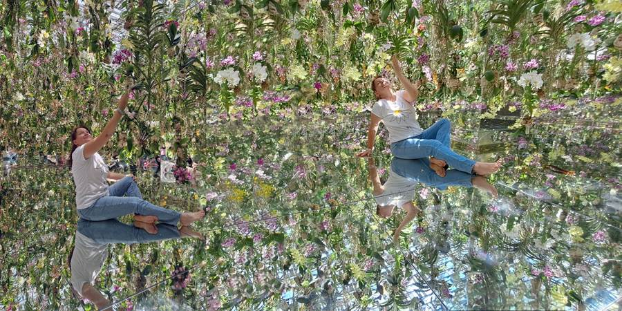 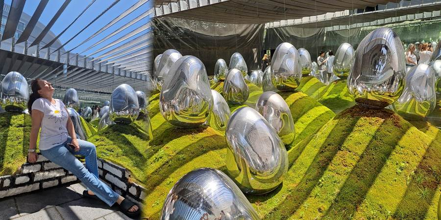Posle toga smo otišli do Kawasaki robotiksa, koji je proradio, videli robotske ruke hemičara, celog robota. Virtuelno se vozili helikopterom i baš je bilo dobro. Nacrtao nas je robot. Samo konture, ali ličimo. Najzad smo našli i velikog robota Gandama. Ogroman je i baš je moćan. Nalazi se u pešačkoj zoni, zato ne mogu taksisti da dovezu blizu njega.
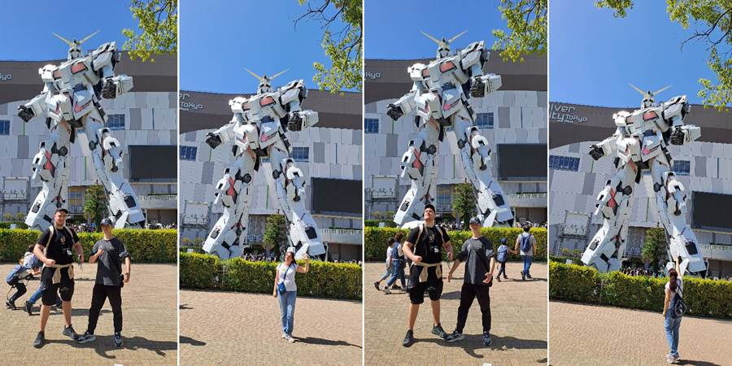
Na kraju se jedva odvukli od umora do Kipa slobode uz reku. Lepo izgleda sa mostom u pozadini. Nadali smo se brodiću do Asakuse, ali je sledeći bio tek u sedam uveče jer je sve bilo zauzeto, jer je Golden week, jelte. Jedino smo tu osetili da se nešto dešava zbog Golden weeka. Da bih izbegla gužve, mudro sam u taj dan stavila atrakcije sa ulaznicama jer su one uvek rasprodate i ima isti broj ljudi u njima. Japanci, naravno, ne nakrkaju previše ljudi da zarade više.
Kombinovali smo voz i taksi da pre stignemo kući. Stigli u pola četiri. Luka odmah odjurio u pazar i kupio dva polovna iPhone-a, stara modela, koji su hteli, svaki po 1000 dinara u nekoj prodavnici polovne robe. Jako su bili srećni i Kristina i on.
Uspeo je da odmori sat vremena i ajmo u Shibuju. Snašli smo se sa sve presedanjem. Sve smo domaćiji. Naša kućica, naša prodavnica, naša linija vozom. Našli Shibuya Sky zgradu i popeli se. Stigli oko 20 minuta ranije, taman kad je prethodni termin za zalazak sunca. Bio je otvoren ulaz za njih. Mi se napravili blesavi i skenirali karte, aparat se nije bunio, hvala mu, i imamo najskuplje fotke sa zalaskom sunca nad Tokijom. Najskuplje u smislu da se za neki datum prodaju karte 4 nedelje ranije u ponoć i odu za par sekundi ili su već rezervisane od ranije, te za zalazak. Ja kao uspela, čekajući ponoć u niskom startu tačno 4 nedelje ranije kad se puštaju karte, preko Kkday sajta, da ih rezervišem, al javili su mi posle: karte su rasprodate. Trk na zvanični sajt koji mi je komplikovaniji jer mora da se registruje, al sam uspela da dobijem tek sledeći termin kad sunce već zađe. Došli smo ranije, automat nas pustio i eto nama zalaska sunca nad Tokiom.
Gore, na 48. spratu, duva vetar strašno. Najavili su da će možda zatvoriti taj gornji otvoreni deo zbog vetra, ali srećom nisu dok smo mi bili. Izdivili smo se Tokiju, kao na dlanu. Vidikovac ima 360 stepeni, otvoren je i nigde se Tokiju ne vidi kraj, gde god da pogledaš. Svetluca. Videli smo Tokyo Tower, Crveni Ajfel koji je obasjan šarenim svetlima. Možda zato što je danas praznik muške dece.
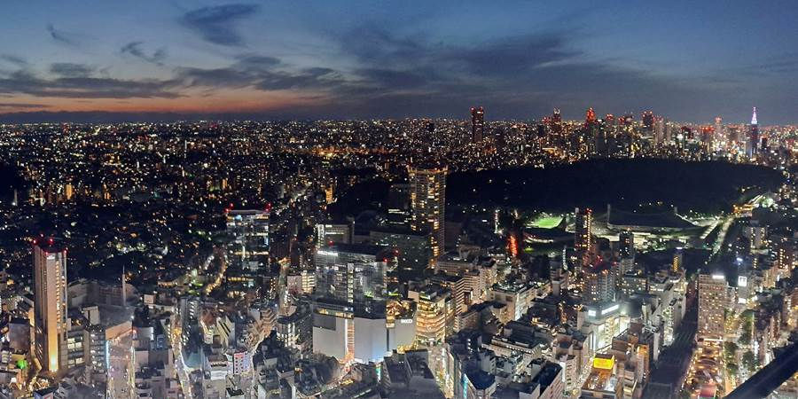
Ova crna fleka je ogroman park, ili šuma, u kojoj smo bili.
Pošto smo bili preumorni samo smo prešli preko Shibuya scramble raskrsnice, koja je najprometnija raskrsnica na svetu. Cifre na jedno zeleno svetlo i dnevno koliko ljudi pređe sam zaboravila ali su fascinantne (milion ljudi dnevno). Eto, Duško, možeš da guglaš.
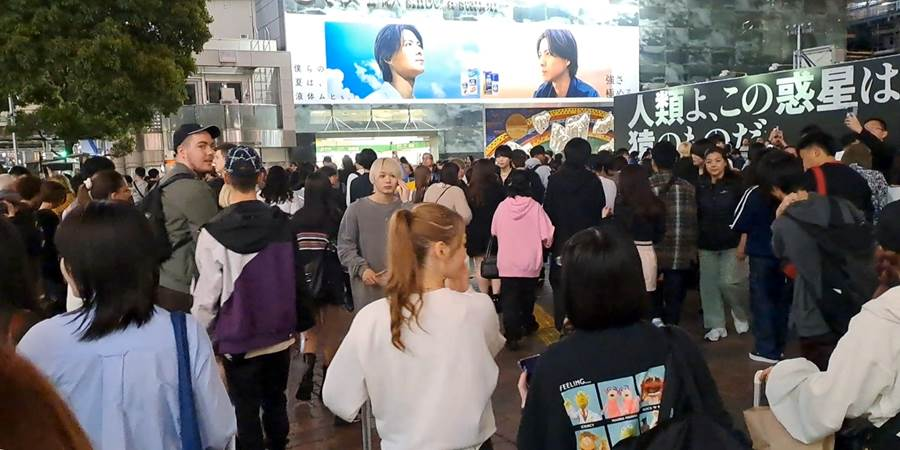
Zbog umora se nismo penjali po okolnim zgradama da slikamo raskrsnicu, što smo želeli, pošto je ona pored WC šolje najveća znamenitost. Prošli smo pored statue Hačika, najvernijeg psa na svetu, koji je tu na Shibuya stanicu dolazio godinama po gazdu koji je bio profesor i naglo je preminuo na predavanju (u filmu ga igra Ričard Gir, naravno da ga nisam gledala. Šta će mi da plačem ceo film). Uglavnom, uginuo je baš tu na raskrsnici, čekajući ga, pa su mu digli spomenik a njega preparirali i drže u muzeju. Ni to nemam želju da vidim.
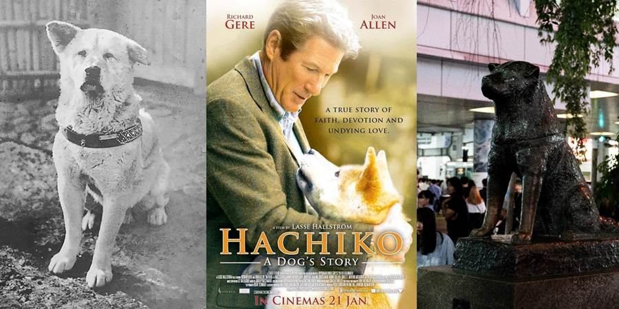
Videli smo 3D bilbord pandu. Jeli smo u jednom od njihovih restorana gde se na ekrančetu poruči hrana a stigne na pokretnoj traci. Sve je mnogo zgodno. I obroci su mali pa može svašta da se proba. Ja sam jela tempuru, pohovane račiće i hobotnicu. I deca su svašta jela, čak i sirovo. Vrlo brzo su naučili i da koriste štapiće. Vole japansku hranu: ramen, udon, tempuru, suši, moći kolačiće, maču, you name it.
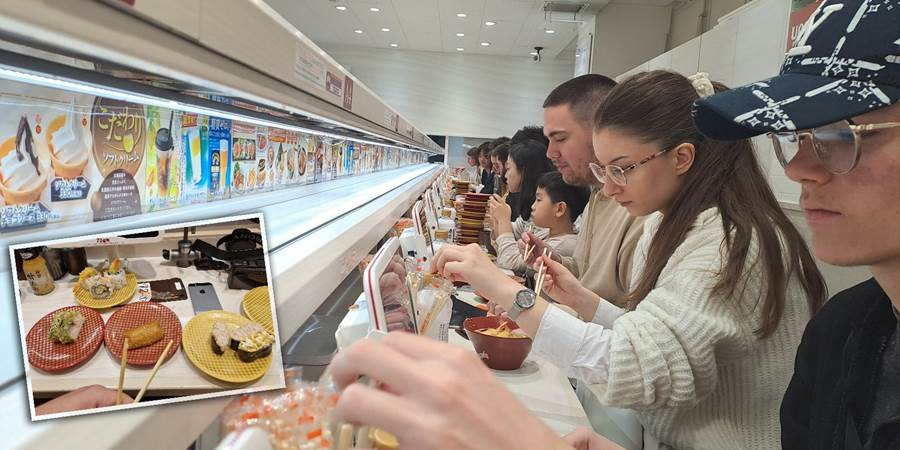
Obično ljudi ili baš vole japansku hranu ili se žale da su ostali gladni u Japanu.
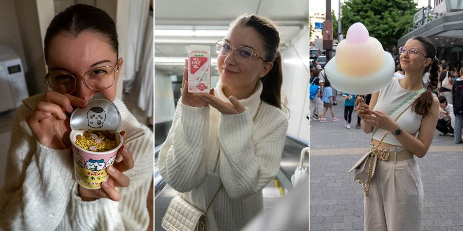
A i sam Japan je takav. Ili te osvoji ili te oduva.
Prevelik je Tokio ali ga naša mala grupa osvaja.
Shibuya je prepuna mladih koji su tu izašli da se šećkaju, šmekaju. Sve vrvi, totalno je dobra energija. Daleko je od predstave da su hladni i nezainteresovani. Uzavrela mladost. Pričaju, kikoću se. Doterali se. Ženskice i frajeri. Gužva, gužva. A mi se pitali gde su svi i što je tako mrtvo u tri ujutru.
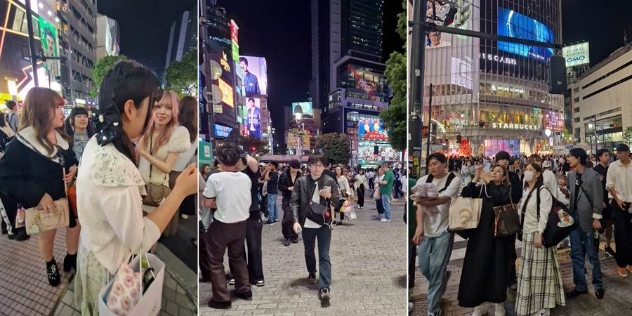
I skroz mi se sviđa disciplina. Niko me nije gurnuo, čuknuo, ubacio se preko reda ili samo nešto da pita, u tim gužvama.
Videli smo i Muzej govana. Nismo ulazili. Fazon je. Sve plastično. Verovatno je deci smešno. Njima je sve smešno što je u fazonu prdi, smrdi.
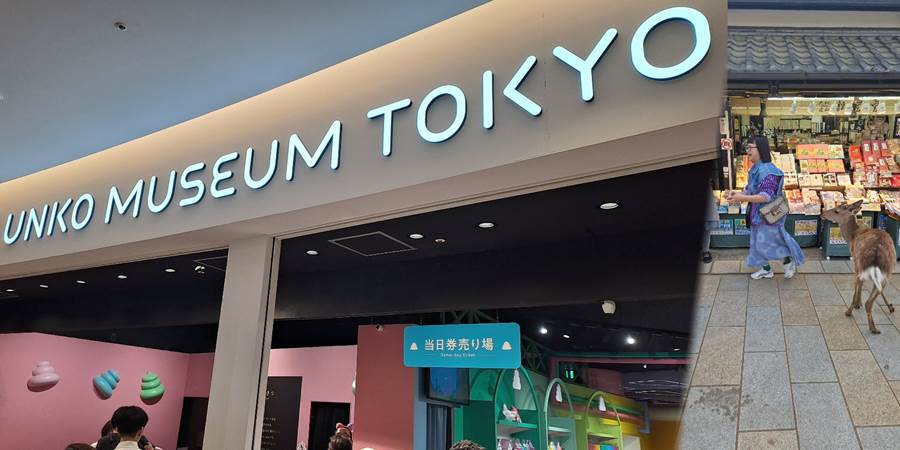
Ne propustite sledeću avanturu!
Kad Sandra krene u novi kraj sveta, vaš inbox prvi sazna. Prijavite se i stižu vam sve nove priče mejlom.